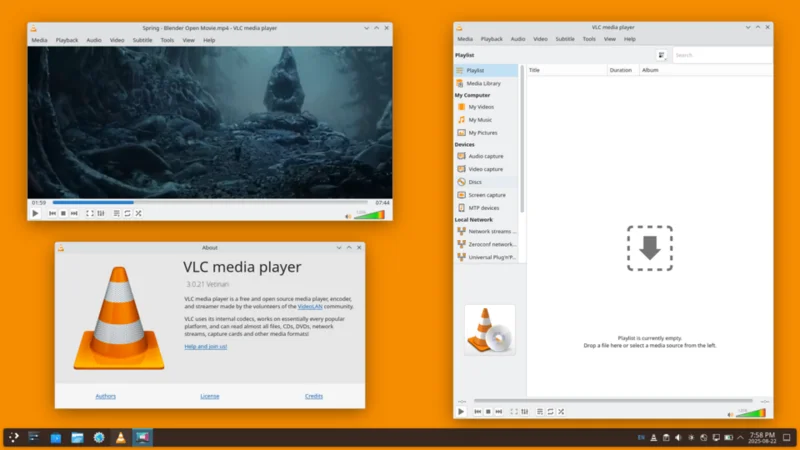

VLC Media Player
Trình phát đa phương tiện mã nguồn mở, phát được hầu hết mọi định dạng mà không cần codec.

VLC Media Player là trình phát đa phương tiện mã nguồn mở, có khả năng phát hầu hết mọi định dạng video và âm thanh mà không cần cài thêm codec. Đây là trình phát media được ưa chuộng nhất thế giới với hơn 3 tỷ lượt tải về.
VLC hỗ trợ phát đĩa DVD, CD, streaming trực tuyến, xem phim từ file torrent và nhiều định dạng file khác nhau. Phần mềm nhẹ, ổn định và có sẵn trên tất cả các nền tảng: Windows, macOS, Linux, Android và iOS.